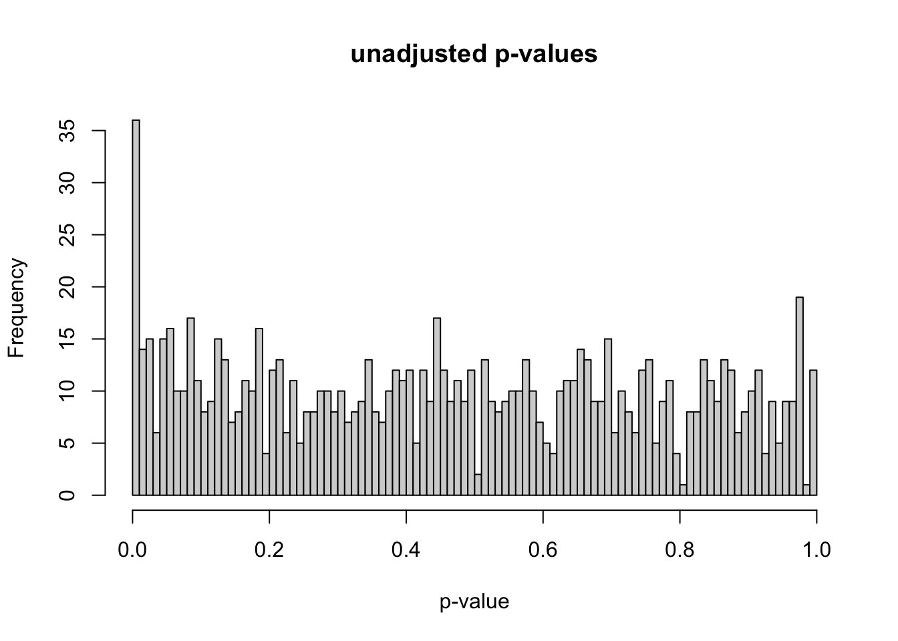

For one of my spatial transcriptomics research projects, I am working on simulating data to evaluate the sensitivity and specificity of our method. I wanted to document the process simulating counts data, as there are many learning opportunities along the way. This post is the first part, in which I will discuss understanding false discovery rate (FDR) in a basic differential expression analysis.
The overall framework of the simulation is as follows. First, I simulated gene expression data for 1,000 genes with 20 samples. Second, I manipulated the gene expression values for 100 genes in half the samples to be much higher. Third, I computed differential expression tests for each gene. Fourth, I explored the p-values and false discovery rates. After a lot of trial and error, this code is the final version of the simulation. I will explain each parameter and variable value choice in greater detail below.
# simulate gene expression data for 1000 genes and 20 samples# repeat for 100 iterationsset.seed(3)num_iterations <-100alpha_levels <-seq(0.001, 0.1, by =0.001) num_genes <-1000num_de_genes <-100num_samples <-20num_half_samples <- num_samples /2fdr_percent_df <-data.frame(matrix(0, nrow = num_iterations, ncol =length(alpha_levels)))for (i in1:num_iterations) {# generate gene expression data# use individual lambda for each gene lambda <-runif(num_genes, min =5, max =8) gene_expr <-matrix(0, nrow = num_genes, ncol = num_samples)for (k in1:num_genes) { gene_expr[k, ] <-rpois(num_samples, lambda = lambda[i]) } de_genes <-sample(1:num_genes, num_de_genes) fold_change <-runif(num_de_genes, min =5, max =8)for (j in1:num_de_genes) { gene_expr[de_genes[j], 1:num_half_samples] <- gene_expr[de_genes[j], 1:num_half_samples] * fold_change[j] } gene_expr <-data.frame(gene_expr)# create indicator for DE genes gene_expr$is_de <-FALSE gene_expr$is_de[de_genes] <-TRUE p_values <-apply(gene_expr, 1, function(x) { t_test <-t.test(x[1:num_half_samples], x[num_half_samples+1:num_samples]) t_test$p.value }) gene_expr$p_values <- p_values adj_p_values <-p.adjust(p_values, method ="fdr") gene_expr$adj_p_values <- adj_p_values fdr_percent <-sapply(alpha_levels, function(alpha) { num_positive_tests <-sum(adj_p_values <= alpha)# calculate the number of false positives as the number of non DE genes with adjusted p-value <= alpha num_false_positives <-sum(gene_expr$adj_p_values[!gene_expr$is_de] <= alpha)if (num_positive_tests >0) { fdr <- num_false_positives / num_positive_tests *100 } else { fdr <-0 }return(fdr) }) fdr_percent_df[i, ] <- fdr_percent}fdr_percent_avg <-colMeans(fdr_percent_df)fdr_percent_sd <-apply(fdr_percent_df, 2, sd)# plot unadjusted p-valueshist(gene_expr$p_values, breaks =100, xlab ="p-value", main ="unadjusted p-values",sub ="p-value histogram for final iteration")
# plot FDR vs significanceplot(alpha_levels, fdr_percent_avg, type ="l",xlab ="significance level", ylab ="average FDR (%)",main ="FDR vs. significance level",ylim =c(-1, 10))lines(alpha_levels, fdr_percent_avg + fdr_percent_sd, lty =2)lines(alpha_levels, fdr_percent_avg - fdr_percent_sd, lty =2)
To simulate the gene expression data, I used the Poisson distribution because it is a discrete probability distribution that can handle count data. In order to draw observations from the Poisson distribution, we need a parameter value, lambda, to represent the mean and specify the distribution. I drew 1,000 observations from the uniform distribution from 5 to 8 to get the lambda values. Initially, I had used the uniform distribution from 1 to 5. This distribution created many Poisson observation values that were equal to 0 within each gene, which remained 0 when multiplied by the fold-change factor. I wanted the differentially expressed gene counts in each sample to be increased when multiplied by the fold-change factor, not to remain 0.
At this point, I have initial gene expression data for 1,000 genes for 20 samples. In order to create differentially expressed genes, I randomly chose 100 genes to manipulate. I sampled 100 fold-change factors from the uniform distribution from 5 to 8, then multiplied the chosen gene counts for the 10 samples in condition A by the fold-change factors. I initially used the uniform distribution from 1 to 2 for the fold-change factors, but I increased the magnitudes of these factors to make sure that differential expression could be detected with very large effect sizes. For example, using the uniform distribution from 1 to 2 instead of 5 to 8 gives us the p-value distribution below. This post by David Robinson (“How to Interpret a p-Value Histogram” 2014) helped me understand how to interpret a p-value histogram. If we ignore the peak at 0, the null p-values should be uniformly distributed between 0 and 1 by definition. The peak at 0 is where most of the alternative hypotheses should lie.
As stated earlier, I simulated data for 1,000 genes and 20 samples. Out of the 1,000 genes, 100 are true differentially expressed genes. I chose 100 out of 1,000 genes to make this simulation realistic as there are typically thousands of genes in these types of data, but only a small percent are differentially expressed. There are 10 samples in condition A and 10 samples in condition B (these can be thought of as diseased vs. control). Reducing the number of samples per condition makes the p-value distribution less like what we would expect. For example, using 3 samples per condition instead of 10 gives us the p-value distribution below.

After generating the simulated gene counts data and creating differentially expressed genes, the next step is computing the differential expression test. For each gene, I used a two sample t-test where the first sample is the gene counts values for condition A and the second sample is the gene counts values for condition B. These tests result in 1,000 total p-values, which I explored with a p-value histogram. The histogram is anti-conservative, which is what I was hoping for.
After examining the p-value histogram, I used the Benjamini & Hochberg procedure to correct for multiple hypothesis testing. I used the adjusted p-values to analyze the FDR at various significance levels. For example, consider a significance level of 0.05. The total number of positive tests is the number of adjusted p-values that are less than 0.05. The number of false positives is the number of non-differentially expressed genes with adjusted p-values that are less than 0.05. The FDR is equal to the number of false positives divided by the total number of positive tests. So, we are rejecting as many null hypotheses as possible while guaranteeing that no more than 5% of those rejected null hypotheses are false positives. I repeated this FDR calculation for significance levels ranging from 0.001 to 0.1.
Finally, I repeated the entire experiment 100 times. These repeated experiments allowed me to calculate confidence intervals for the FDR for each level of significance. I also calculated the true positive rate (TPR) and true negative rate (TNR), also known as sensitivity and specificity, at various levels of significance. Increasing the sample size and fold-change factors make it easier for the differential expression test to find DE genes, which also makes the specificity very high.
Coffee
If you found this blog post helpful and would like to support my work, feel free to buy me a coffee.